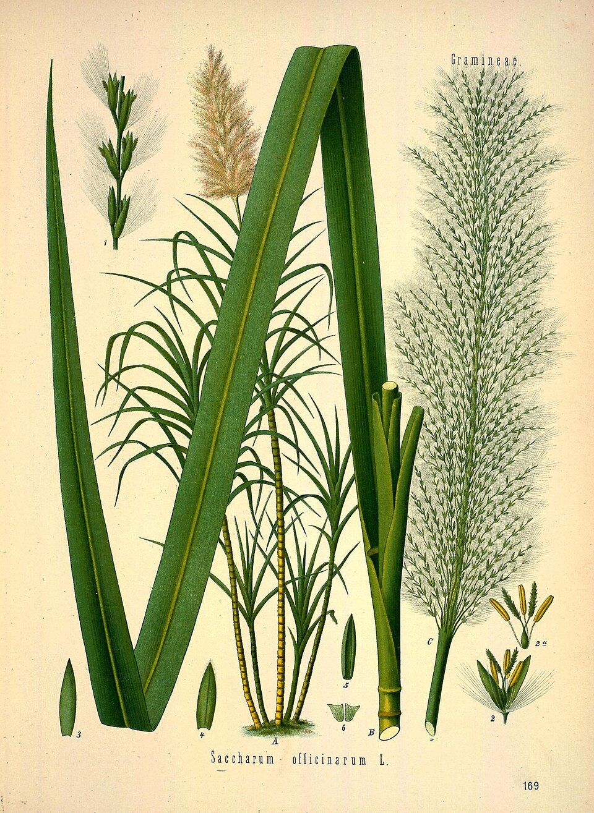
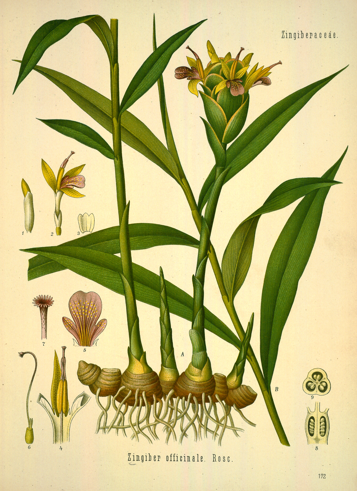
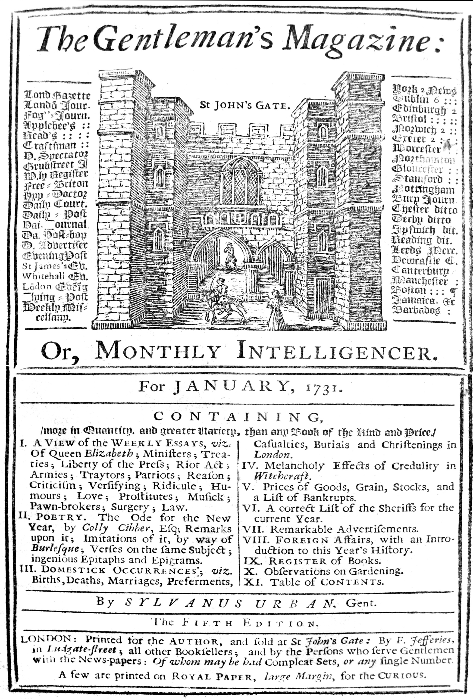
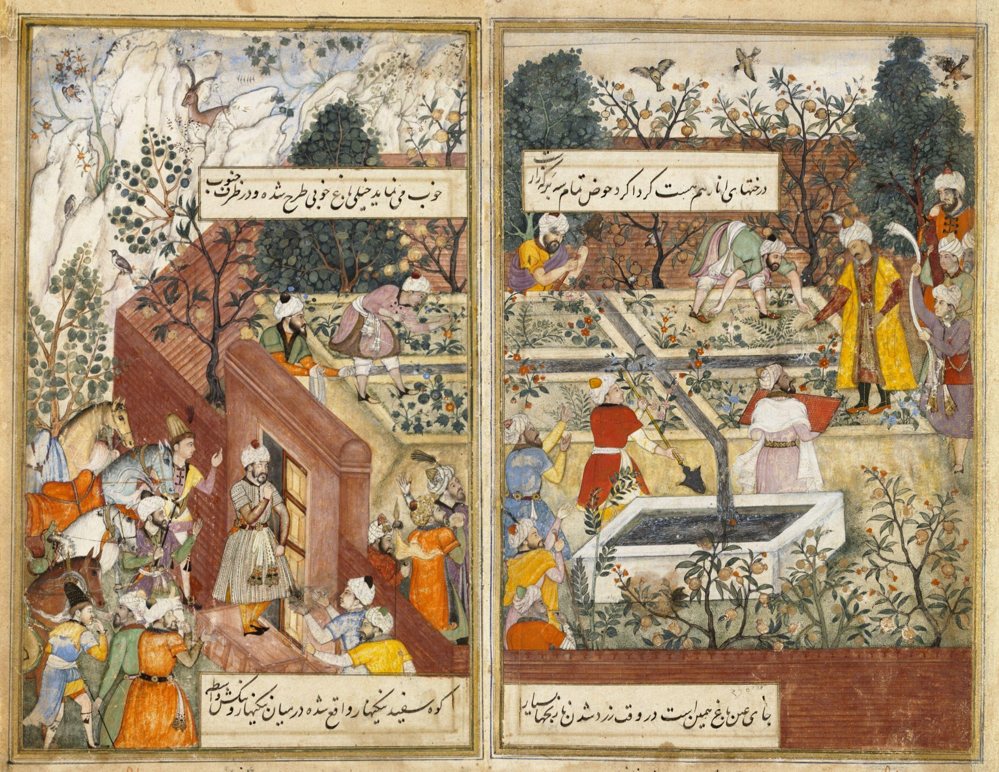
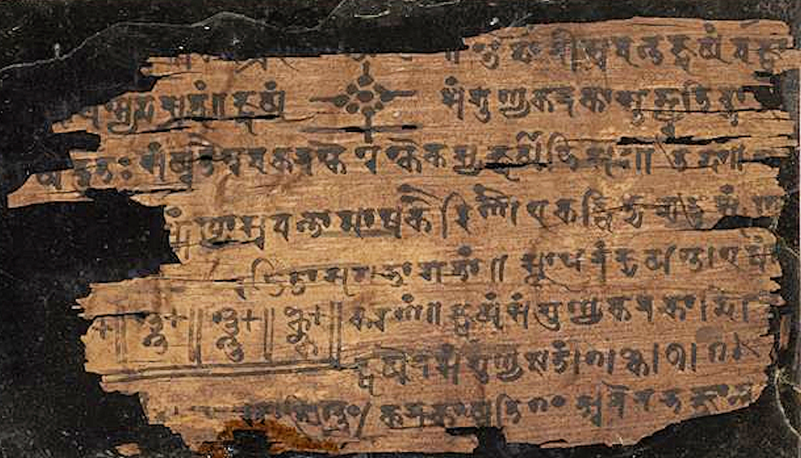
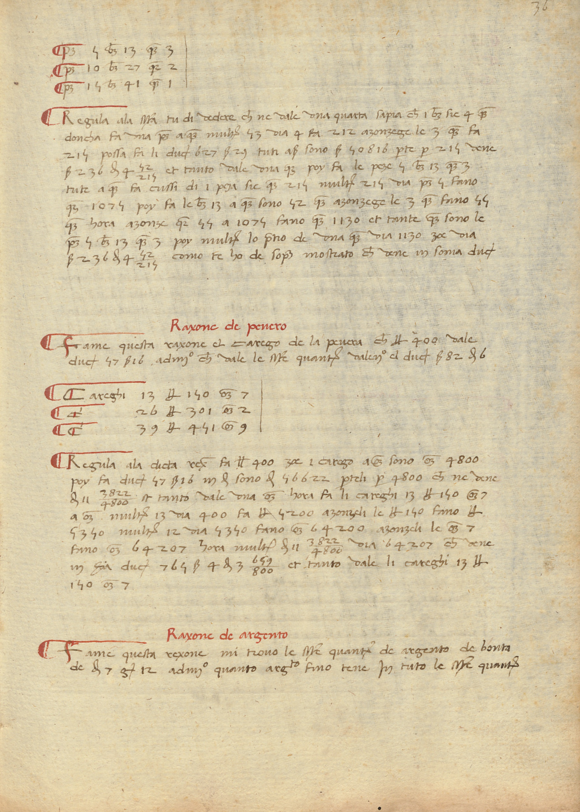
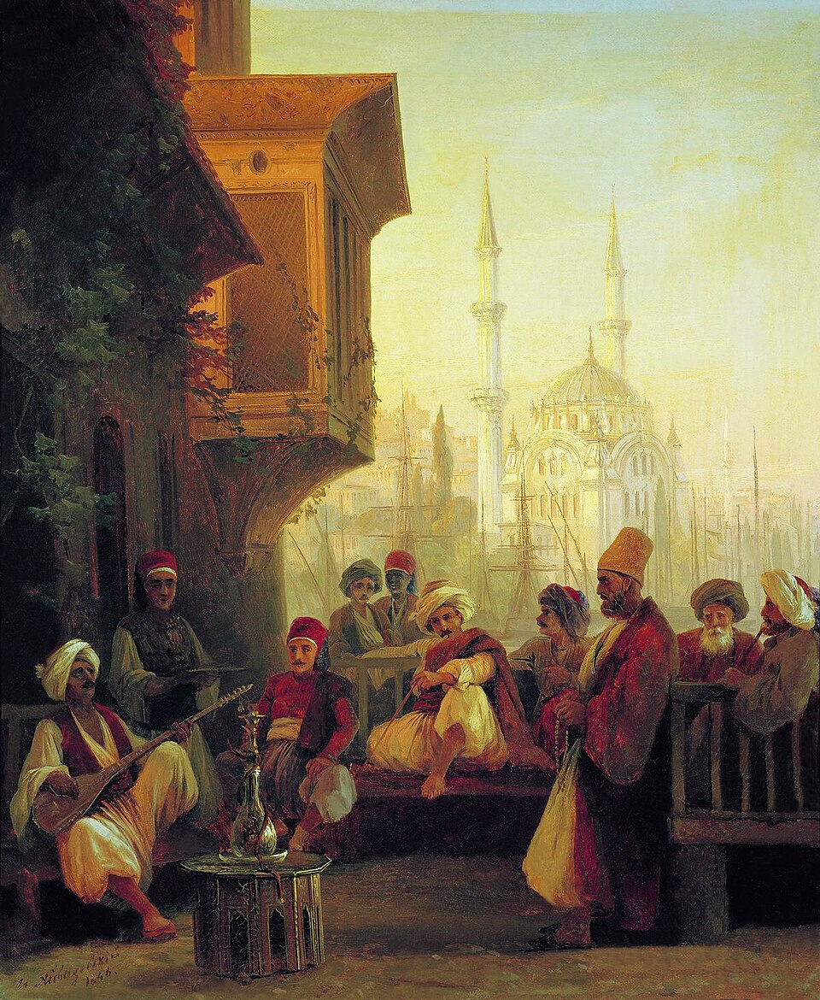
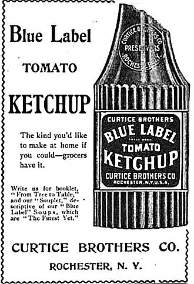

sugarSmall grains become a worldwide sweetness.Sugarcane botanical plate · 1890Image source ↗
gingerA spice finds new names and new meanings.Ginger botanical plate · 1883–1914 (publication range)Image source ↗
magazineA storehouse learns to hold stories.The Gentleman’s Magazine, January issue · January 1731Image source ↗
checkA king ends up on your restaurant bill.Ivory chess king from Nishapur · 9th–12th centuryImage source ↗
paradiseA garden grows into heaven.Babur overseeing the Garden of Fidelity · 1589Image source ↗
zeroEmptiness becomes something you can count.Bakhshali mathematical manuscript · Date debatedImage source ↗
algorithmA mathematician’s name becomes a method.Mathematical handbook, Ms. Ham. 692, folio 36r · 1451Image source ↗
coffeeOne drink gives a family of places their names.Coffeehouse in Constantinople · 1846 (source date)Image source ↗
ketchupA sauce crosses oceans and changes ingredients.Blue Label tomato ketchup advertisement · 1898Image source ↗